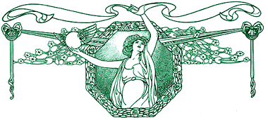

Original Sin of the Month
Original Sin of the Month
|
Taking Care of Business
 "PIGS!" CRIES ONE SON as the other races him to the front door. "Mom! Pigs!" they cry together as 12 escaped eight-week weiners come trotting confidently through the fence, snout up the dirt around the roses, nip at the zinnias, tear up some grass, and then jog around to explore the shadowy comfort of the old garage. "Pigs!" I join, jumping up and running to the front steps. Together, the three of us surround the pigs in a triangular human shield and guide them with the simplicity of fear back to the opening in the fence where they quickly stuff their small fat sus scrofa tummies through the naked lady flowers onto the brambley ground and push back through. I inspect the tomato patch and check the squash. I walk down the garden to my lover's painting studio where one last weiner has wandered confusedly into an overgrown creek bed and sits snorting plaintively. I pick two hard pears from the neglected tree, check fruitlessly for the peaches that won't come this year because the landlord vented his frustration with a chainsaw just at blossom time, and eat an apple from another tree, spitting out the rotten bit near the core where a worm surely resides. The painter goes back to his studio; the youngest child picks up his copy of White Fang; the oldest shakes the spit out of his trumpet; I return to the keyboard. We all go back to work. HAVING RAISED IN MYSELF the ridiculous notion that life boils down to the barren formula that you work hard and then you die, I am still unaccustomed to the idea that valuable work at which one earns a handsome living can be done amid pig-chasing, sitting at the public pool keeping one eye on Knevil wannabes flinging themselves from the diving board, making love at lunchtime, or while on the back porch in a bathing suit with cherries and the radio. I don't know where I got this notion; my parents seem to enjoy plenty of corporate golf, gossipy parties, long lunches, European trips, and to be well-paid. I just believed that simultaneously waitressing, housecleaning, and film reviewing on four hours of sleep a night was simply my lot while raising the boys alone. And then I got my first staff job, at an alternative weekly where the stress level was oppositely geared to the wage scale. I prided myself on 60 hours per week at poverty level, took a bitter pleasure in not being able to afford the scant health benefits, and shielded the rest of the writers from the perverse emnity of the editor. I rose in ranks, became arts editor, then associate editor. Worked more, earned small raises grudingly given. I had seven years of college education under my belt, was writing more than 8,000 words of copy a month, had several staff members under my guidance, and still qualified for the free school lunches and state health care that I was too stupidly middle class to take for my family. And then the chance came to turn my laundry room into the Real Astrology international pig farm nerve center that it now is. Uneasily, I took the risk, quit my job, began earning twice my previous salary, and started my new employment--which, emotionally at least, consisted solely of worrying all the while about whether it is actually work if you enjoy yourself. Because this is the question: If you can fit your life into your work and your work into your life, is it still work? Is it truly work if it's done at 1 a.m. and you're not a bartender or a nurse, if you can have a serious telephone conference with your boss while wearing nothing but your underwear, and if dinner can be cooking while the telephone and the fax are ringing, the computer is looking up something, and that glass of wine is sitting precariously close to the hard drive? Is it work if you are the only office manager, if all the coffee cups in the sink are yours, if there is no Christmas party, if your employer gives you a birthday present, and if the failures of the janitorial staff rest solely upon your own shoulders? It appears that it is, though I have yet to truly believe it. I still put on lipstick and shoes to sit down in the laundry room. I still don't feel productive unless I'm given a to-do list that needs be fulfilled yesterday. I still worry about being a wastrel if the day has only had eight hours in it that are devoted to the star of the stars. But it is slowly easing. BUT THIS HAS RAISED another important question: What is work? As I have heartily complained above, I was very productive at the weekly and I was there long hours. But there were many days when I was simply just depressed and being paid for it. When I would spend the hours going restlessly from my desk to the restroom, squat morosely in parking lot's patch of sun, check the e-mail, stare at the screen as though its wavering blink were a God's-eye of importance that eluded only me. Those days still come upon me, but the hours spent performing these frustrating rituals--what Rob calls "writing foreplay"--don't get logged. I no longer try to get paid for them. Now I aim simply to give up; there's no manager squinting over my time--it's all horribly, wonderfully up to me. Now I know that it'll come at 1 a.m., and that my commute from the bedroom to the laundry room is short. And do you know what? It works.
How do you earn a living? Have the flings and sparrows of outrageous fortune made your lot in life better? What works for you when you work? Close the cubicle and tell us about it. We've got all day.
Back to the Table of Contents.
Surf the Boulevards network
to other great alternative
content sites.
|